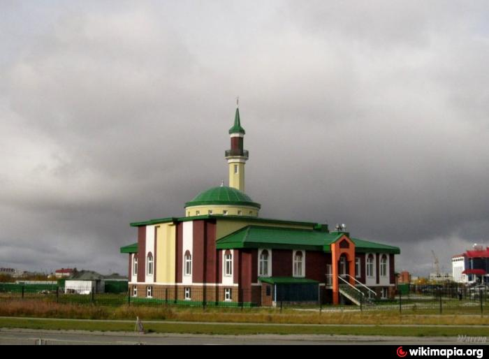
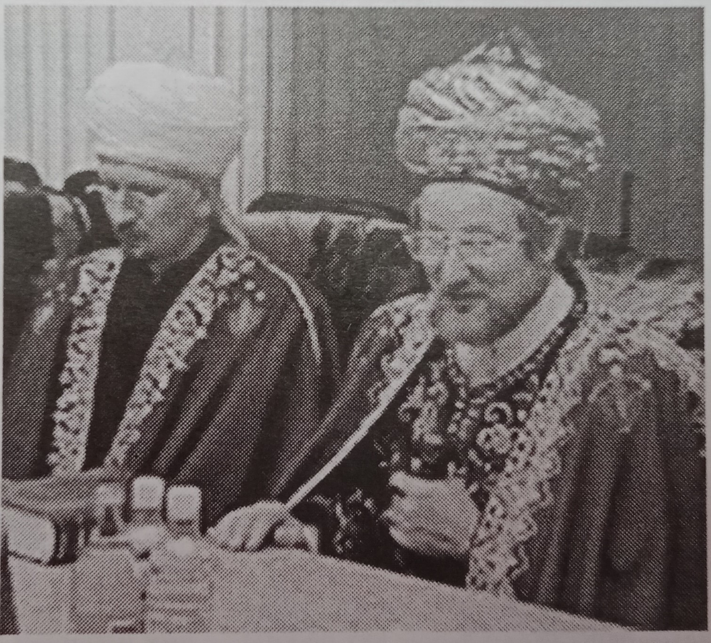
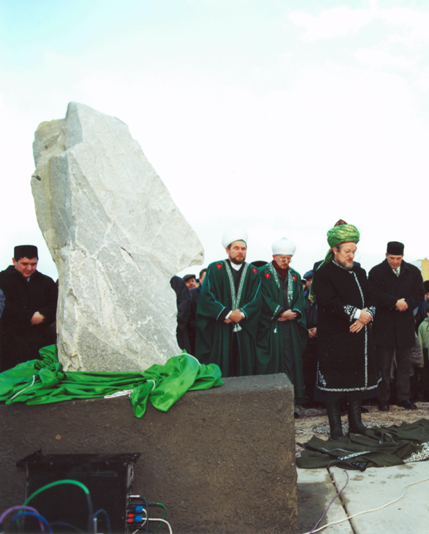
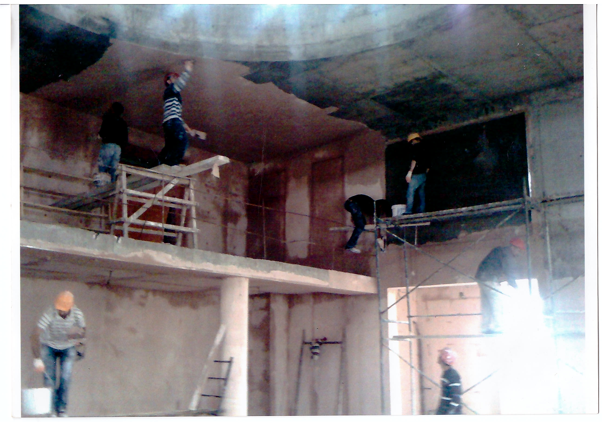
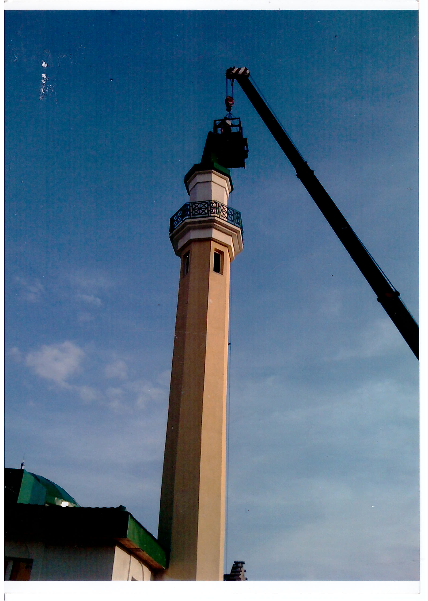
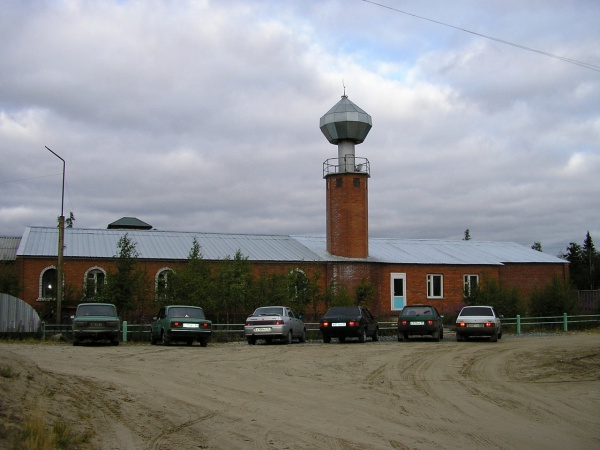

ул. Тундровая 7
Год открытия: 2010
Новый Уренгой - интересный и многообразный город, в котором проживает много народов с разным вероисповеданием. В нем есть православные храмы и мусульманская мечеть. Она была торжественно открыта в 2010 году. Размеры мечети составляют 22 X 12м. Площадь застройки мечети - 555, 5 кв.м., общая площадь здания - около 850 кв.м .

Все начиналось в 2002 году, когда в городе официально была зарегистрирована местная мусульманская религиозная организация “Иман”. 28 сентября того же года состоялся визит в Новый Уренгой Верховного Муфтия Центрального Духовного Управления Мусульман России Талгата Сафа Таджуддинова.

Вместе с мэром города Виктором Николаевичем Казариным и представителями руководства ООО «Уренгойгазпром» он торжественно заложил первый камень в основание будущей мечети.

По словам муфтия, таким образом здесь, на этой земле, была оставлена частичка сердца, которая затем превратится в храм. Немного позже, на встрече с высшим мусульманским духовенством Верховный Муфтий сказал: “Мы имеем самые дружеские и братские отношения и с русской православной церковью, и с другими традиционными для России религиями. И сегодня мы не хотим потерять то взаимопонимание, которое сложилось у нас в стране во имя духовного и нравственного возрождения и процветания нашей отчизны. Ведь «любовь к твоей отчизне - есть частица твоей веры». Мы искренне желаем, чтобы это драгоценное наследие, которое было завещано нашими предками, осталось после нас нашим детям и нашим внукам. Мы должны построить храм и все вместе в нем молиться. И только тогда мы достигнем благоденствия, и только тогда наши молитвы, обряды и посты будут приняты Богом”.
В мае 2005 года турецкая строительная фирма «Ямата» предложила проект Соборной мечети. После нескольких доработок он был одобрен и принят Советом махалли , администрацией города и Региональным Духовным Управлением Мусульман ЯНАО. В октябре 2006 года была забита первая свая под фундамент мечети. В этом мероприятии приняли участие муфтий Западной Сибири Тагир-хазрат, заместитель муфтия ЯНАО Усман-хазрат, представители администрации города Новый Уренгой, городской думы, турецкой фирмы “Ямата”, гости из Когалыма и священнослужители муниципальных образований ЯНАО.

Во время строительства религиозную службу вели во временном здании на выделенном участке.
Все работы по строительству мечети осуществляла на безвозмездной основе турецкая фирма «Ямата», остальные здания комплекса возводились методом народной стройки: на добровольные пожертвований горожан, предприятий и организаций города.

В 2010 году состоялся повторный визит в город Новый Уренгой делегации Центрального Духовного Управления Мусульман России во главе с Верховным Муфтием для торжественного открытия мечети.
Сегодня на территории Соборной мечети находятся непосредственно сама мечеть, минарет, ведется строительство медресе.
Она продолжает строиться и благоустраиваться. В ней уже проводятся намазы, пятничная молитва и занятия по изучению основ Ислама. Прихожанами Соборной мечети являются представители самых разных национальностей, проживающих в городе, и число их постоянно растет.
Мусульманская община не только хранит религиозные традиции, но несет и серьезную социальную функцию: помогает людям, попавшим в трудную жизненную ситуацию. Также она активно сотрудничает и с Русской Православной Церковью, провозглашает тесное межконфессиональное сотрудничество.
P.S. На сегодняшний день Соборная мечеть является единственной мечетью Нового Уренгоя. Однако не первой. Первой была мечеть "Нур Ислама", которая располагалась по адресу ул. Кедровая 5А. Она была основана в 1996 году. Но в 2011 году была разрушена, так как не была предусмотрена генпланом города на данном участке.

{kind=link}
{kind=link}
{kind=link}
{kind=link}
{kind=link}
{kind=link}
{kind=link}
{kind=link}